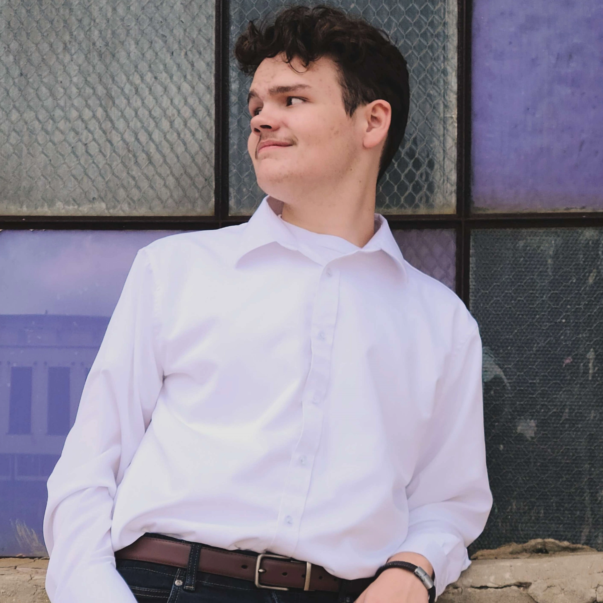

Lucas Hamner

Creative Digital Illustrator with years of experience of working
with and producing high-quality visual assets. Proficient in industry-standard
software such as Clip Studio Paint, Adobe Creative Cloud, and Autodesk Maya.
Education
- The University of Texas at Dallas - 2024 - Present
Employment
- Hamner & Hamner Pressure Washing - 2021 - 2024
- Freelance Artist - 2024 - Present
Skills
- Project Management
- Digital Art & Design Software
- Microsoft 365 Certified
Awards
- National Beta Senior Texas Convention 2024 - Digital Art Divison II 2nd Place
- National Beta Senior Texas Convention 2024 - Language Arts 1st Place
- National Beta Senior National Convention 2024 - Language Arts 3rd Place
Contact
Email Me